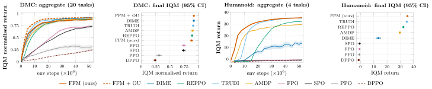
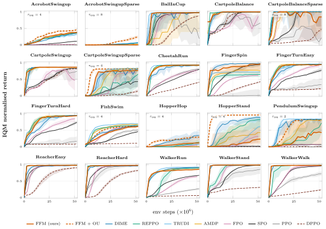
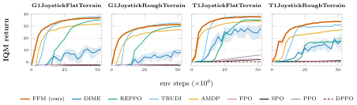

Reinforcement Learning via
Fixed-point Flow Matching
Autonomous Learning Robots Lab (ALR), Karlsruhe Institute of Technology (KIT)
In maximum-entropy and behaviour-constrained RL the optimal policy is a Boltzmann distribution. Flow policies trained with flow matching can represent such complex, multimodal distributions, but flow matching needs samples from the distribution it is fitting, and in RL there are none. Fixed-point flow matching (FFM) is a data-free procedure for training and fine-tuning flow policies in RL: it keeps the simple flow-matching regression and replaces the data-derived target with one read off the critic.
Method

Learned policies
One successful offline-to-online rollout per OGBench domain, from the final 1.5M-step checkpoint. Videos loop; hover for controls.
Offline-to-online results on OGBench
FFM fine-tunes a BC-pretrained flow policy for 1M offline steps and then 500K online environment steps, against seven baselines under an identical protocol.

FFM reaches the best average success after online fine-tuning (0.95 vs. 0.93 for the next-best method) and is the only method at or near the top on every locomotion domain. The same update also trains flow policies entirely from scratch — see the on-policy results below.
On-Policy Maximum Entropy RL
FFM is not limited to fine-tuning a pretrained policy: in the on-policy maximum-entropy setting the same critic-derived regression learns flow policies from scratch, as we demonstrate on the 20 MJX MuJoCo Playground tasks and on MJX's four humanoid joystick tasks, against eight baselines (10 seeds per task, 50M environment steps). FFM performs on par with the strongest baselines on the MJX Playground tasks, and performs favorably on the humanoid tasks in terms of both end performance and learning speed. On playground tasks where exploration is the bottleneck, FFM additionally benefits from temporally correlated Ornstein–Uhlenbeck exploration noise: FFM + OU uses the best OU time constant on those tasks and plain FFM elsewhere.



Paper
Reinforcement Learning via Fixed-point Flow Matching. Denis Blessing, Onur Celik, Gerhard Neumann. arXiv:2610.12848, 2026. [PDF]
If you find this work useful, please cite:
@misc{blessing2026reinforcementlearningfixedpointflow,
title={Reinforcement Learning via Fixed-point Flow Matching},
author={Denis Blessing and Onur Celik and Gerhard Neumann},
year={2026},
eprint={2610.12848},
archivePrefix={arXiv},
primaryClass={cs.LG},
url={https://arxiv.org/abs/2610.12848},
}Code
The code is available at github.com/DenisBless/FFM_RL.